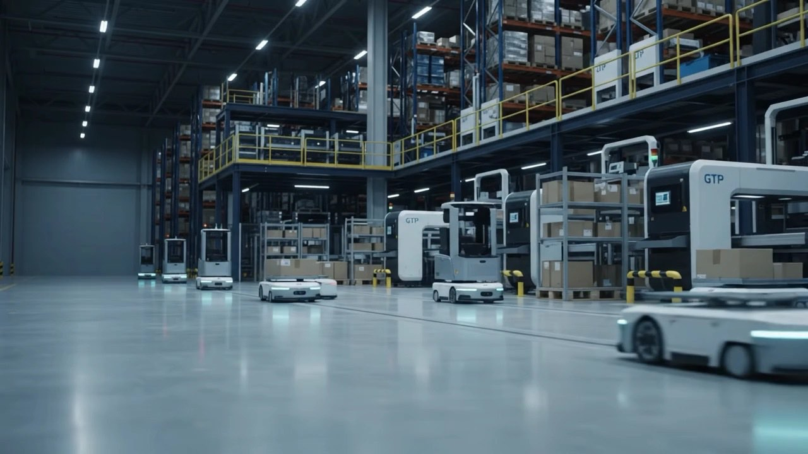

新卒採用・キャリア採用
現場に立ち、
自分の手で、変えていく。
外から提案するのではない。顧客の現場を請け負い、自分たちの責任で回す。
技術と現場の両方に立つPALだからできる、"当事者"の仕事が、ここにある。
※映像はイメージです
Find Your Field
あなたの専門性が活きる仕事を探す。
PALには9つの職種があります。それぞれ異なる専門性を持ち、必要な場面で連携しています。担当している仕事の内容は「仕事を知る」ページでご覧いただけます。
「募集中」は、募集職種ページに募集要項がある職種です。「確認中」は現在の募集状況を確認中の職種で、募集していないという意味ではありません。勤務地・応募条件は募集職種ページでご確認ください。
People / Real Voices
その仕事をしている人がいる。
7人の社員が、入社のきっかけから今の仕事までを本人の言葉で話しています。下の見出しは、本人がインタビューで語った言葉です。
A Day in the Life
この仕事の、ある1日を見てみる。
出社から退勤まで、何を、どの順番で進めているのか。6つの職種で、実際の1日を時間とともに掲載しています。
After Joining PAL
入社したら、どんな毎日が始まる？
入社したての人が、実際にどんな仕事をしているのか。最初に経験する場面を4つ、キャリアのページに載せています。
- SCENE 01会社と物流の全体像を知る
- SCENE 02現場に入って、自分の目で見る
- SCENE 03先輩に同行して、覚える
- SCENE 04担当を持って、やってみる
FAQ
応募の前に、気になることはありませんか。
選考の進み方、未経験からの応募、勤務地や働き方について、47件の質問にお答えしています。